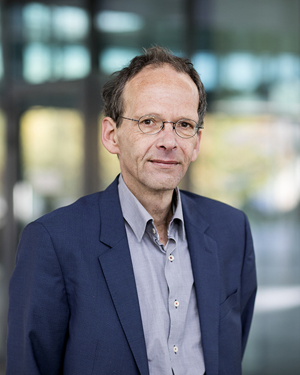

Journée Visu 2019
AgroParisTech, Paris
Vendredi 17th May 2019 9:00-18:00
Introduction
La journée annuelle du GT Visualisation du GdR IG-RV aura lieu le vendredi 17 mai 2019 dans les locaux d'AgroParisTech (Centre de Paris Claude Bernard). Cette journée a pour vocation de rassembler les acteurs, académiques et industriels de la communauté française en visualisation, afin d'échanger sur les problématiques et les enjeux actuels et futurs de la visualisation. Cette journée couvre en particulier la visualisation scientifique (SciVis) et la visualisation d'information (InfoVis).
Appel à contribution
Nous sollicitons des *soumissions sur résumé* (jusqu'à 2 pages), qui présentent des travaux originaux. Il peut s'agir de travaux de recherche finalisés, mais aussi de recherche en cours, projets ANR, Européens ou autres, retour d'expérience industriels, etc. Il peut également s'agir de travaux qui ont été soumis mais pas acceptés, et présentés dans le but de les améliorer en vue d'une nouvelle soumission ou tout simplement afin de "valoriser" l'investissement. Il peut enfin s'agir de travaux non encore soumis, et présentés en vue d'avoir un premier retour de la communauté. L'objectif n'est pas de faire de la sélection mais au contraire de permettre à tout le monde de présenter ses travaux. La date limite de soumission est fixée au 12 avril 2019.
Thématique
Les thématiques couvertes par l'appel sont variés et inclus:
* visualisation scientifique
* visualisation d’information
* visualisation de grandes masses de données et visualisation haute performance
* design de visualization
* visualization et storytelling
* visualisation in-situ
* visualisation analytique
* perception visuelle et visualisation
* interactions dans un contexte d'analyse visuelle
* évaluation de la visualisation
* couplage simulation / visualisation
* visualisation de données relationnelles (par ex.réseaux sociaux)
* fouille visuelle des données et techniques de navigation dans les entrepôts de données
* architectures client-serveur pour la visualisation de données distantes
* visualisation collaborative (colocalisée ou à distance, synchrone ou asynchrone)
* visualisation sur dispositifs nouveaux (par ex. murs d'écrans, tablettes tactiles, montres intelligentes) et avec des dispositifs d'interaction non conventionnels (par ex. capteurs 3D)
* méthodes topologiques pour la visualisation
* visualisation de données géolocalisées
* visualisation de données biologiques et moléculaires
* visualisation de données incertaines
*
et tout autre thème novateur en rapport avec la visualisation scientifique ou la visualisation d'information.
Modalités de soumission
La soumission est un fichier PDF de 2 pages maximum, plus une page optionnelle incluant des figures en couleur. Les feuilles de style MS Word et LaTeX peuvent être téléchargées ici.
Format de la présentation
Lors de la journée Visu, vous pourrez présenter votre soumission sous trois formes:
- Présentation orale (français ou anglais)
- Poster
- Démonstration
>>>>>>>>>> Pour contribuer cliquez ici et remplisser ce formulaire. <<<<<<<<<<<
INSCRIPTION
La journée Visu 2019 est gratuite et ouverte à tous dans la limite des capacités d'accueil. Pour assister à cette journée, inscrivez-vous avant le 15 mai 2018.
>>>>>>>>>> Pour s'inscrire cliquez ici et remplisser ce formulaire. <<<<<<<<<<<
KEYNOTE
Nous avons prévu d'inviter au début du séminaire un conferencier international: Jack (Jarke J.) van Wijk.

Jack (Jarke J.) van Wijk is full professor in visualization at the
Department of Mathematics and Computer Science of Eindhoven
University of Technology (TU/e).
He received a MSc degree in industrial design engineering in 1982 and a PhD degree in computer science in 1986, both from Delft University of Technology, both with honors. After a short period in the software industry, he has worked for ten years at the Netherlands Energy Research Foundation ECN. He joined Eindhoven University of Technology in 1998, where he became a full professor of visualization in 2001. His main research interests are information visualization, visual analytics, and mathematical visualization. He is cofounder and VP Scientific Affairs of multiple start-ups. He is scientific director of the Professional Doctorate in Engeneering program on Data Science, and scientific director of the Data Science Center Eindhoven. He has (co-)authored more than 150 papers in visualization and computer graphics. He has been paper cochair for IEEE Visualization (2003, 2004), IEEE InfoVis (2006, 2007), IEEE VAST 2009, IEEE PacificVis 2010 and EG/IEEE EuroVis (2011, 2016, 2017). He received the IEEE Visualization Technical Achievement Award in 2007 for his work on flow visualization.
More informations.
PROGRAMME
Le programme de cette journée sera mis à jour aprés acceptation des presentations.
| Horaire | Description |
|---|---|
| 9:00 | Accueil, cafée. |
| 9:30 | Introduction de la journée. |
| 9:45 | Conférence invitée |
| 10:45 | Pause + posters |
| 11:45 | Session 1: Président de session: |
| 12:40 | Pause Déjeuner |
| 13:50 | Session2 |
| 15:15 | Pause + démos et posters |
| 16:00 | Session 3 |
| 16:00 | Conclusions de la journée |

ORGANISATEURS 2019
Précédentes Journées Visu
- Journée Visu 2018: 25 mai 2018, EDF Lab, Palaiseau
- Journée Visu 2017: 7-8 juin 2017, IFP Energies nouvelles, Rueil-Malmaison.
- Journée Visu 2014 : 7 novembre 2014, Télécom ParisTech, Paris
- Journée Visu 2013 : 6 novembre 2013, Institut de Biologie Physico-Chimique, Paris
- Journée Visu 2012: 25 septembre 2012, Télécom ParisTech, Paris
- Journée Visu 2011: 12 octobre 2011, CEA, Bruyères-le-Châtel
- Journée Visu 2010: 5 octobre 2010, EDF, Clamart